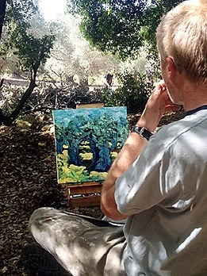

אודות משה קסירר
אני מתחיל לצייר משהו, אבל בנקודה מסוימת, הציור מתחיל לעשות בחירות מעצמו. זה התהליך שמעניין אותי ומנחה אותי.
אני אוהב את התחושה של איבוד שליטה, ואני לא זה שעושה את הבחירות, המעורבות שלי היא ליצור משהו חי שיוכל לומר דברים חדשים.
אני רוצה שהציורים שלי יהיו בעלי אינטליגנציה משלהם, ולא יהיו סתם עבדים למשמעות שלי.
קורות חיים
- 1992 – לימודי ציור ואמנות במכון אבני, תל אביב.
- 1993 – השתלמות עם הצייר נפתלי גולומב, תל אביב.
- 1994 – לימודי קולנוע בבית הספר קמרה אובסקורה, תל אביב.
- 1995 – זכייה במלגת קרן תרבות אמריקה-ישראל.
- 1997 – מעצב בתעשיית הקולנוע והפרסומות.
- 1999 – מעצב בתעשיית WEB.
- 2005 – השתלמות עם הצייר רוברט בוסלר.
- 2006 – השתלמות עם הצייר דון ג'סקו.
- 2008 – ציור הופך למקצוע עיקרי.

תערוכות יחיד
- זית ושמים אפורים גלרית הקצה, נהריה - 2017אוצרת: לי רמון
- שורשיות גלרית Tapestry מילוואקי, ויסקונסין, ארה"ב - 2017אוצרת: שמחה מויאל
- שורשיות גלרית Futernick מיאמי, פלורידה, ארה"ב - 2016אוצרת: שמחה מויאל
- שורשיות גלרית Deutser יוסטון, טקסס, ארה"ב - 2016אוצרת: שמחה מויאל
- שעתו של הטמבל גלרית מוניו, קיבוץ כפר מסריק - 2015אוצרת: אפרת פלד שדה
- עבודות חדשות גלרית התחלות חדשות, עין הוד - 2015אוצרת: מיכל עזרוני
- שכנות גלרית רוזלין ליונס, כרמיאל - 2014אוצרת: שושי נורמן
- שורשיות גלרית PJCC פוסטר סיטי, קליפורניה, ארה"ב - 2014אוצרת: שמחה מויאל
- השראה מקומית גלרית לובטון, ירושלים - 2013אוצר: אבי לובטון
- New Works גלרית לובטון, ירושלים - 2012אוצר: אבי לובטון
- מעלות הזית אולמות האבירים, עכו - 2011אוצרת: שושי נורמן
- המוציא שמן מן הארץ גלרית יודפת - 2011אוצרת: שושי נורמן
- מהגליל לירושלים גלרית לובטון, ירושלים - 2010אוצר: אבי לובטון
- מתווים בגליל מורל, מצפה אבירים - 2009אוצרת: איילת לטוביץ'
- שייכות גלרית מחניים - 2009אוצרת: יהודית כנרי
- הדרך הביתה גלרית רוזלין ליונס, כרמיאל - 2008אוצר: שלומי שורצברג
תערוכות קבוצתיות נבחרות
- 70 אמנים 70 שנים למדינהגלריה אלבז ניו-יורק
- עקרון התקווהיד לבנים ר"ג
- תנועה וריקודגלריה מרכזית ת"א
- בדרך לירושליםגלריה אל-גלרי סחנין
- יפה נוף-אמנויות 2קפה לואיז חיפה
- אח-ו-רעמכללת האקדמית אחווה
- אדמהמרכז אומניות ע"ש ברר מעלות
- נוף ישראלי - אז והיוםארט מרקט תל אביב
- שכנותגלרית יודפת
- לחם ושושניםמנשר תל אביב
- הזיתהאוניברסיטה המורמונית ירושלים
- אגודת הציירים והפסלים - תערוכה שנתיתבית האמנים ע"ש שאגאל חיפה
- הארת שולייםגלרית רוזלין ליונס כרמיאל
- אגודת הציירים והפסלים - חברים חדשיםבית האמנים ע"ש שאגאל חיפה
- הגלויה הסודית - 4 / 5 / 6תל אביב
- שווהגלרית הקצה נהריה
- הארת שולייםהיכל התרבות כרמיאל
- הגדרקיבוץ גשר הזיו
- זייתוןהגלריה העירונית תמרה
- עת מסיקגלרית הקצה נהריה
- עת לכל חפץמועצה משגב
- דיוקנאות עם ארומהבית יגאל אלון גנוסר
- מבואה בתנועהמועצה משגב
- תלבושת זהותגלרית מכמנים
- מעבר לאופקICU חיפה
- על אפניופארק תעשייה משגב